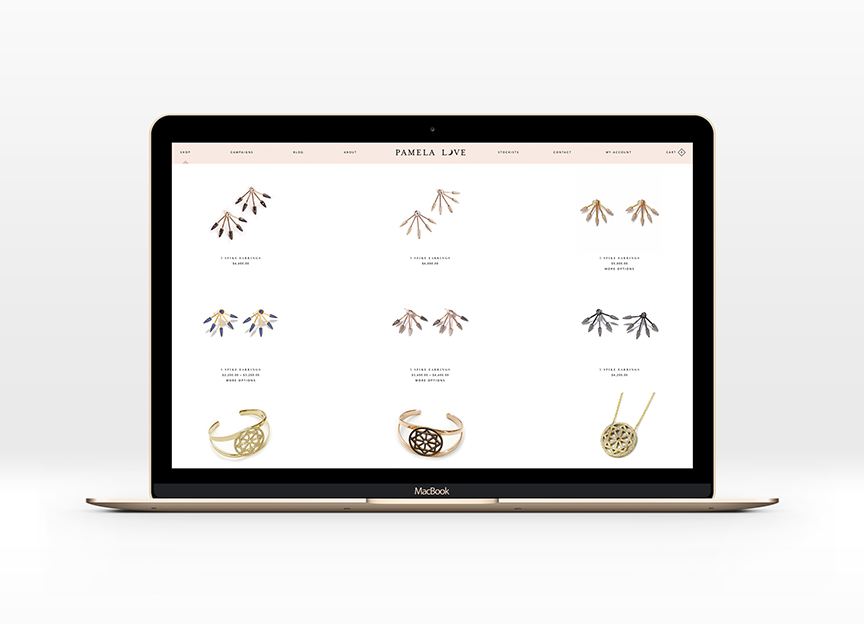

Among Strangers came to life in 2014 in San Francisco, California.
Using naturally formed and some altered crystals, creator Angela Alarcon, values the spiritual nature of each stone, believing that each crystal carry distinct properties and healing qualities depending on the kind.
Among Strangers stands by the belief that each piece has already pre-chosen a bearer, and is hand crafted with intention into powerful talismans to serve the bearer’s highest and best.
The brand’s aesthetic resembles old relics dug up from the ground, with its organic formed nature made from the method of electroforming and plating metals.
Visit Among Strangers
After a year of selling online on Etsy, as well as Instagram, and in person, I’ve been able to study the target market of my buyers, not just who have spending power, but take a real interest in my jewelry and come back as return customers.
Age: 30-40yo
Location: San Francisco, CA
Gender: F
Income Level: 60,000 and above
Marital Status: Single
Occupation: Health & Wellness experts, and Creatives
Consumer Attitude: Will search online for the best and most unique piece after being inspired by a photo posted on instagram
Consumer Values:Values secrecy, and finding something rare and unique to all their peers, values pieces that are not just for aesthetic purposes but are meaningful purchases, values stories behind the pieces
Lifestyle/Interests: Travels, takes weekend vacation, attends dinner parties with friends on occasion, loves hiking and adventure, seeks for more meaning in life, values their overall health and well-being, exercises and practices minfulness
Tech: engaged in social media, values affirmation from other followers

Pamela Love’s typeface and moon logo mark reflect her simple and elegant aesthetic heavily influenced by astrology and the occult.
Bona Drag’s Egyptian inspired logo also reflects their selection of alternative clothing and unique jewelry carefully curated for the indie witch.
Unearthen’s minimalist take on their logo is versatile and can stand alone as a logo type but can also be paired with any seasonal logo they may create for the brand.
Kay Nielsen illustrations I have a deep affinity to folklore and fairytales and Kay Nielsen’s illustrations accompanying these stories we’ve heard as children are breathtaking and beautiful. I find that his style is such a lost art as the world is moving to a more realistic aesthetic.
Alchemical Illustrations I’ve always been fascinated with old alchemy and the heavy use of symbolism in their illustrations. I believe there are a to of lost secrets hidden behind each found illustration and the mystery in each drawing is something I have been drawn to since I was a child.
Initial rough sketches of logo ideas. (Click on the image to view)
First iterations of logo lockups using both moon logomark and eye logomark with type.
(Click on the image to view)
(Click on the image to view)


Vertical logo lockup with both type and mark


Bare logomark
Horizontal logo lockup with type
Horizontal lockup with both type and mark

The brand was intended to be an all-around e-commerce website selling vintage clothes, jewelery and antiquated items which came with an online magazine collateral.

(Click on the image to view)
The second iteration took inspiration from Pamela Love's first website. It's a more creative take on the first iteration and was not coded at all.


(Click on the image to view)
The third iteration was the version that was actually launched and used as the online store until recently.


(Click on the image to view)
Pamela Love’s website, built with Shopify, is beautiful and elegant. There’s a lot going on, because she’s built an empire beyond jewelry, but there are many things to take away from it. I love the color palette she used, and her clean product shots. My favorite part of her website is her use of the diamond shape consistently.
I love the simplicity and straightforwardness of Bona Drag’s site. There’s barely any frills and its purpose as an e-commerce site is very transparent. While Pamela Love’s website allows you to look into many aspects of her life and her products, this site mainly operates as a shop.
(Click on the image to view)


{kind=link}
{kind=link}
{kind=link}
{kind=link}
{kind=link}
{kind=link}
{kind=link}
{kind=link}
{kind=link}
{kind=link}
{kind=link}
{kind=link}
{kind=link}
{kind=link}
{kind=link}